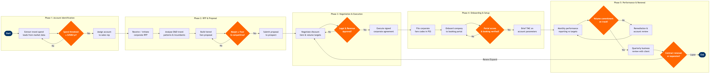

| Step | L4 Step Name | KPI / Target | Pain Point / Risk | Gate |
|---|---|---|---|---|
| 1.1 | Extract corporate travel-spend leads from market data | Pipeline coverage ratio ≥ 3× annual revenue target; ≥ 50 qualified prospects per quarter | BSP spend data lags 6–8 weeks, making real-time competitive displacement difficult to detect; no direct feed from GDS booking data into CRM | |
| 1.2 | Score and qualify accounts by revenue potential | Account qualification cycle ≤ 5 business days; ≥ 80% of Strategic-tier accounts contacted within 10 days | Scoring model relies on estimated spend; actual managed-travel programme size only revealed during RFP — leads to misallocation of senior sales resources | ⚠ |
| 1.3 | Assign account to sales rep and log in CRM | Account assignment completed within 2 business days of qualification; CRM data completeness ≥ 95% | Territory conflicts arise when a corporate HQ and subsidiary are in different rep territories — no automated duplicate-account detection in Salesforce configuration | |
| 2.1 | Receive and register incoming corporate RFP | RFP acknowledgement to client within 24 hours; 100% of RFPs logged in CRM on day of receipt | Large corporates increasingly issue RFPs via e-sourcing platforms (SAP Ariba, Jaggaer) that require separate supplier portals — manual data re-entry into Salesforce increases error risk | |
| 2.2 | Analyse client O&D patterns and incumbent carrier share | Analysis completed within 3 business days of RFP receipt; ≥ 90% of client O&D pairs matched to served routes | Clients on unmanaged or partially managed programmes cannot provide clean PNR data — analyst must reconcile multiple credit-card and agency feeds, adding 1–2 days to analysis cycle | |
| 2.3 | Build tiered discount and incentive fare proposal | Proposal build cycle ≤ 4 business days; proposed fares within ±5% of approved discount floor | ATPCO Cat-35 private fare filing requires airline-side ATPCO access and a structured ticketing agreement — errors in Cat-35 setup can expose private fares publicly, creating revenue leakage | |
| 2.4 | Validate proposal profitability against revenue floor | Review turnaround ≤ 2 business days; 100% of proposals above revenue floor before submission | NRM optimises individual O&D segments — corporate block commitments can conflict with open-market yield maximisation, requiring manual override negotiation between Sales and RM teams | ⚠ |
| 3.1 | Negotiate discount tiers and volume commitments with client | Negotiation cycle ≤ 15 business days from proposal submission; win rate on competitive bids ≥ 35% | Lack of alliance membership (not Star Alliance / Oneworld / SkyTeam) limits ability to offer interline or codeshare benefits demanded by globally travelling corporates — significant competitive disadvantage vs. network carriers | ⚠ |
| 3.2 | Route contract for legal and compliance review | Legal review cycle ≤ 5 business days for standard agreements; 100% of contracts reviewed before execution | EU-headquartered corporates require GDPR-compliant data processing addenda; PNR data sharing with Sabre PRISM must be covered by DPA — legal review backlog can delay contract execution by 2–4 weeks | ⚠ |
| 3.3 | Execute signed corporate agreement and archive | Contract execution within 5 business days of legal approval; 100% of executed contracts uploaded to Ariba within 24 hours | DocuSign/wet-signature mismatches delay effective date confirmation; contract start date in Ariba must align exactly with PSS fare validity window to avoid fare not found (FNF) errors at ticketing | |
| 4.1 | File corporate private fare codes in PSS | Fare codes live within 3 business days of contract execution; zero FNF errors in first 30 days post-launch | Cat-35 private fare distribution requires individual negotiated agreements with each GDS — if a corporate TMC uses a non-preferred GDS, fares may not be visible, forcing off-channel bookings | |
| 4.2 | Onboard corporate travellers to booking portal | Portal onboarding completed within 5 business days; ≥ 90% of eligible travellers active within 30 days | NDC adoption by corporate booking tools (Concur Travel, Cytric) remains uneven — some OBT versions do not support full NDC offer/order flow, forcing fallback to GDS PNR path and losing ancillary upsell capability | ⚠ |
| 4.3 | Brief designated TMC on account parameters and reporting | TMC briefing completed before contract effective date; PRISM reporting activated within 5 days of go-live | Sabre PRISM only captures GDS-booked segments — direct NDC and website bookings are excluded from standard market-share reports, understating channel performance and inflating apparent GDS share | |
| 5.1 | Generate monthly performance report vs. volume commitment | Report published by day 5 of following month; data reconciliation variance ≤ 1% between PRISM and PSS | Multi-source data reconciliation (PRISM + Altéa PSS + AWS Redshift) is manual and error-prone — discrepancies between GDS-reported and PSS-confirmed revenue take up to 10 days to resolve, delaying remediation action | ⚠ |
| 5.2 | Conduct quarterly business review with client | QBR completed within 30 days of quarter end; ≥ 85% of Strategic accounts reviewed each quarter | Clients increasingly demand real-time sustainability reporting (CO₂ per segment) — airline CO₂ data is not yet standardised across CORSIA and IATA Clean Flying framework, making accurate reporting manually intensive | |
| 5.3 | Evaluate contract renewal, renegotiation, or exit | Renewal decision made ≥ 90 days before contract expiry; corporate account retention rate ≥ 80% for Strategic tier | Volume shortfall remediation clauses (clawback provisions) are difficult to enforce when underperformance is caused by airline schedule changes or cancellations — legal disputes can strain client relationship and delay renewal | ⚠ |